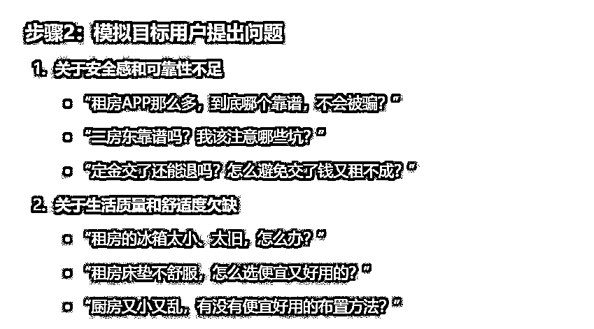
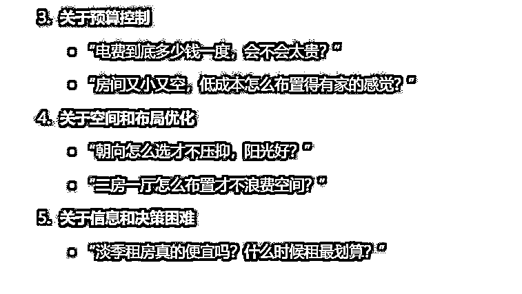
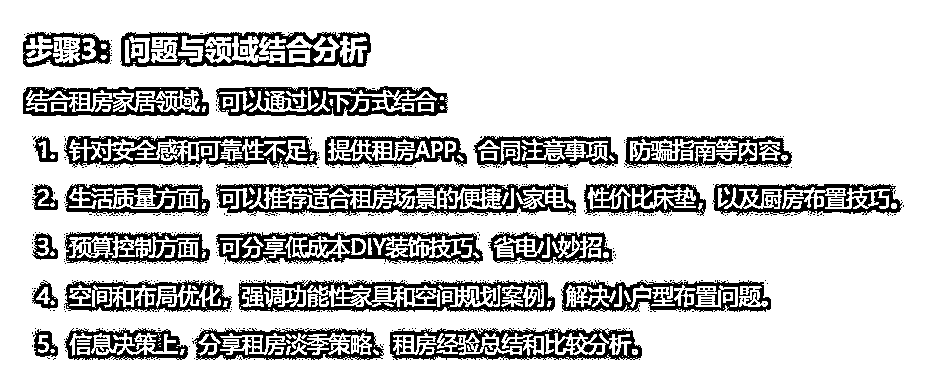

来源：https://balfcirt91j.feishu.cn/docx/UGYLdkFIOoB0f4xld02cgcMynof
能在小红书上做好个人IP的博主，其实都是拿捏人性的高手。这个特点和缅北诈骗份子很像。最近我家不是房子招租吗？差点被杀猪盘骗了钱。对方宣称是深圳高管，被外派到长沙，公司出钱给他租房，可以付清一年房租。（完美租客有没有！）谁知露了破绽，被我识别出来，只能气急败坏地将我拉黑。
去网上一搜，这样的案例还真不少。他们是通过聊熟之后，透露金融内部消息，让其买入理财产品，骗走钱财。气愤之余，不由得也要佩服骗子的洞察能力：
能通过平台找到精准人群（这年头，房东们确实比一般人有经济实力一些），又能根据精准人群的需求（想快点出租、想找到好租客），来制造圈套。
同理，做IP的博主，也是需要找到精准人群，围绕他们的痛点，匹配能满足需求的内容。
你可能会问了，茫茫人海，我去哪找到他们，又如何知道他们的痛点是什么呢？这就要利用“搜索”这个工具了。
接下来看看我是怎么做到的。还是开头的那个案例，我是怎么确定那个人是杀猪盘呢？其实就是通过搜索“帮别人租房、微博联系是骗子吗”得出的答案。
所以，搜索能帮我们“捕获”到那些搜了关键词的人群。而搜索的第一步就是确定关键词。
如果你是一个租房小达人，你想吸引那些租房人群，从而做家居带货，那么，你一定会以“租房”这个关键词，作为起始点。来到第二步。搜索租房的人很多，我怎么知道他们具体搜了什么，而这里面有哪些内容又和我的领域相关，能帮助我快速变现呢？
下面要介绍的这个方法，也是从生财有术的一位大佬——比比先森那里学到的：关键词+a/b/c……还是以租房为例，租房+a、+b后，出来的下拉词条是这些：
把那些能和你的领域挨边的组合词收集起来，就成了。这些词是用户的痛点，由此扩展出内容选题。你可能会叫苦连天，拜托，我是新手，到了这一步，我还是不知道用户的痛点是什么，该如何扩展选题。搜索+AI，快速定位精准人群，生成爆款内容选题。
好人做到底，送佛送到西，接下来，我用AI帮你实现，真正的“喂饭”级步骤。
你是一个善于找到用户痛点的营销专家，你有30年的经验，你可以根据用户在网络上的搜索关键词，敏锐地察觉到用户的痛点是什么，再结合自媒体博主所在的领域和目标人群进行结合，为其输出吸引人眼球的选题。
我是一个XXX领域的博主，我的目标人群是XXXX。我在小红书上搜到大家搜索的关键词如下：“XXXXXX”
请你按照如下步骤为我完成任务：
1.先思考这些关键词，反映了目标用户有哪些痛点；
2.假设你是一名目标用户，针对每一个痛点，你会提出哪些问题？
3.这些问题，与我所在的领域可以如何结合？
4.根据步骤3的分析，针对每一个问题可能包含哪些关键内容点，做出详细拆解。
5.根据步骤4的结果，列出一个月的选题，每天都要有一篇内容。
6.再次把身份转换成目标用户，以痛点程度降序的方式，来做排序。
任务要求：
1.执行步骤2的时候，要模拟目标用户，用口语化的方式提出具体的问题。
2.执行步骤4的时候，要对关键内容点做出详细的拆分，以确保能把这个问题的方方面面都涵盖。
我还是以租房博主为例，我通过abc等字母，搜索到的关键词如下：
租房APP哪个靠谱
租房冰箱
租房必备生活用品
租房床垫
租房朝向怎么选
租房厨房
租房淡季是哪个月
租房电费多少钱一度
租房低成本布置
租房二房一厅
租房二房东注意什么问题
租房付定金要注意什么吗？
租房付了定金不想租了
下面，来看下它的执行过程。
注：我用的AI工具是ChatGPT4o


平心而论，这些问题提得到位，代入用户角度，我挺想知道的。

最后出具选题：
太牛了，就短短2分钟时间，把一个月的选题搞定了！
当然了，它还不止，还做了选题的优先级排序：
按照这些选题去写，我就不相信你引不到用户、变不了现！
快去试试这个简单好用的解决方案吧！